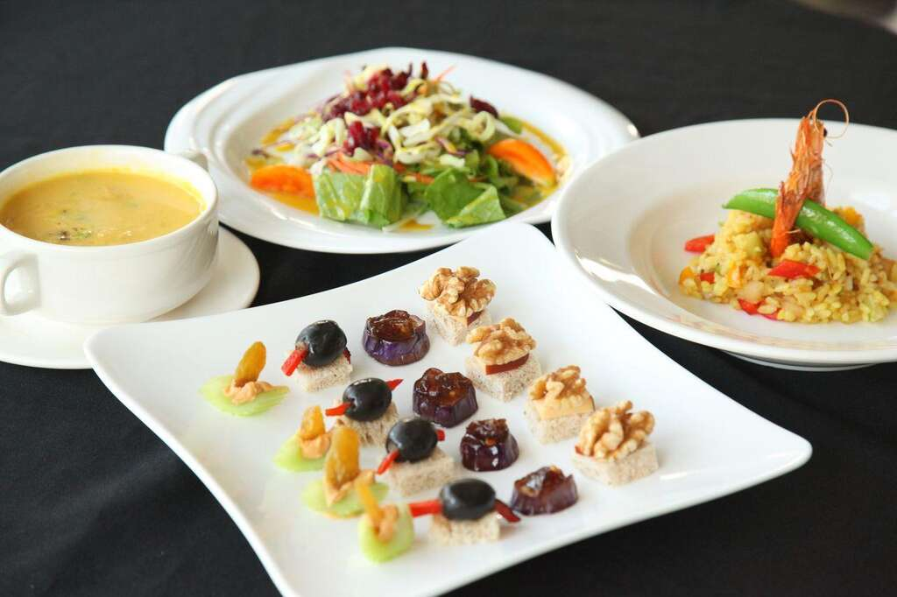

鹿野火車站旁有一間小餐館，整片的落地窗和草綠色的牆壁，看起來格外明亮清新。
主人Daniel在美國飯店工作時，看到當地廚師對食材背景、歷史文化的重視，受益良多，進而希望回到故鄉，為台灣的飲食文化做出貢獻，返鄉的過程中，因為有岳父的支持而得以圓夢，故以岳父家族的名字命名，將餐廳取名為Sarconi Bistro。Daniel希望透過鹿野小館，實踐他對料理的理念。
運用在地食材，結合臺灣的歷史背景來設計菜單，並讓旅客和在地人，都能透過他的餐點，對臺灣的歷史文化有更深一層的認識。
地址: 台東縣鹿野鄉中正路72號955
電話: (08)955-0659